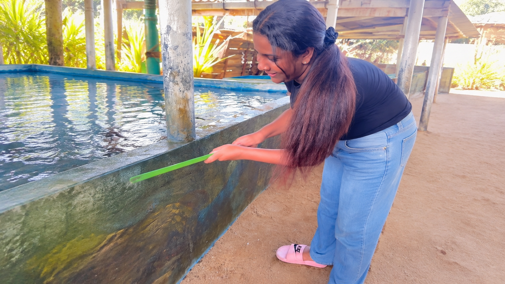
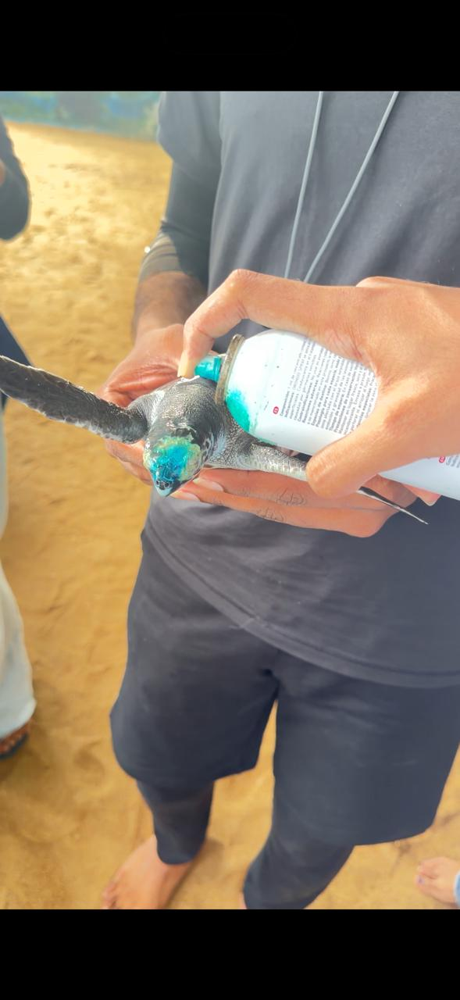
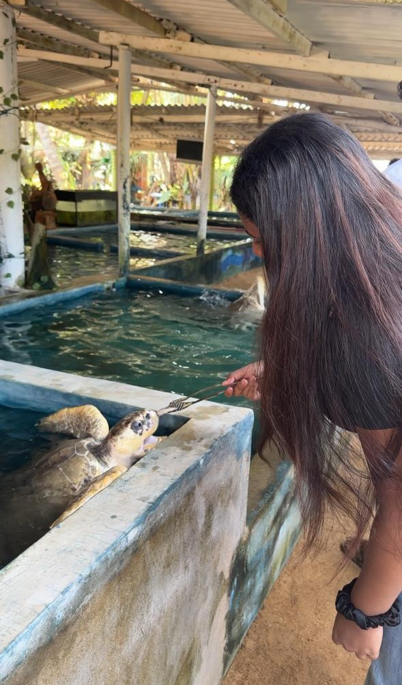
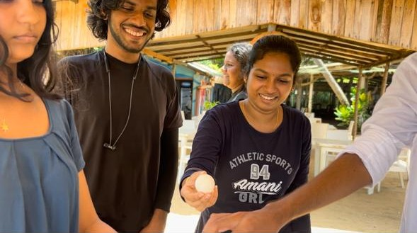
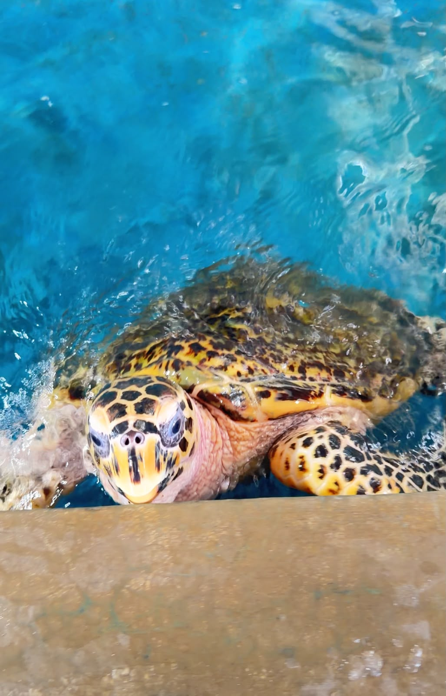
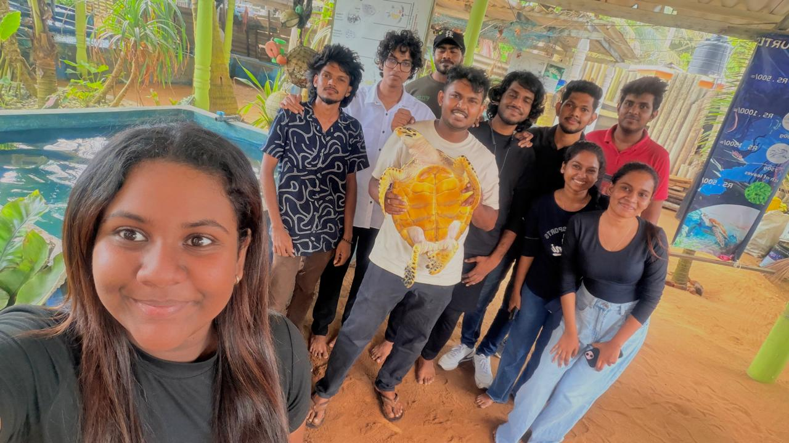
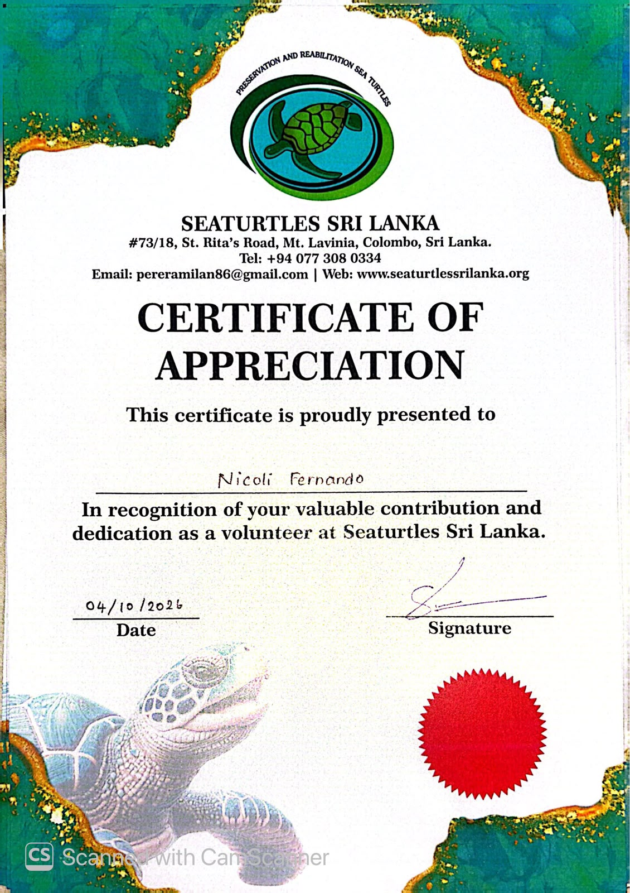

Ocean Crew
A team of students working together towards turtle conservation and community service.
PROFESSIONAL SKILLS • GROUP PROJECT
Turtle Conservation & Community Service Project
As part of the Professional Skills module, our group, Ocean Crew, participated in a community service project at a turtle sanctuary. The project gave us an opportunity to contribute to turtle care and sanctuary maintenance while gaining practical experience in teamwork, communication and environmental responsibility.
A team of students working together towards turtle conservation and community service.
Turtle care, sanctuary maintenance and environmental awareness.
Sea Turtle Sanctuary - Mount Lavinia
During our visit to the turtle sanctuary, we participated in several activities that supported the care and wellbeing of turtles. We helped clean and maintain the sanctuary, assisted with cleaning the turtles, and fed them under the guidance of the sanctuary staff. We also observed and assisted with applying necessary medication under appropriate guidance. Throughout the visit, we learned more about turtles, their behaviour, their needs and the importance of marine conservation. Working together as Ocean Crew allowed us to strengthen our teamwork, communication and sense of social responsibility while contributing our time and effort to a meaningful cause.
A closer look at our contribution to the project.
Cleaning and maintaining areas within the sanctuary.
Assisting with cleaning and caring for the turtles.
Feeding turtles under the guidance of sanctuary staff.
Assisting with necessary medication under appropriate guidance.
Understanding turtle care, behaviour and conservation.
Learning about protecting marine animals and their environment.
Working together to complete the project activities.
Five moments that capture our Ocean Crew experience.

MY WORK

TURTLE CARE

OUR ACTIVITIES

TEAMWORK

Turtles

MEMORABLE MOMENTS
Certificate received for participating in the project.

Take a glimpse into our journey with Ocean Crew. Watch our project video to see the activities, experiences and memories from our turtle conservation and community service project.
WATCH PROJECT VIDEO →SCAN TO WATCH
This project reminded us that even small contributions of time and effort can make a difference. It was an opportunity to learn, work together and develop a greater appreciation for protecting marine life.